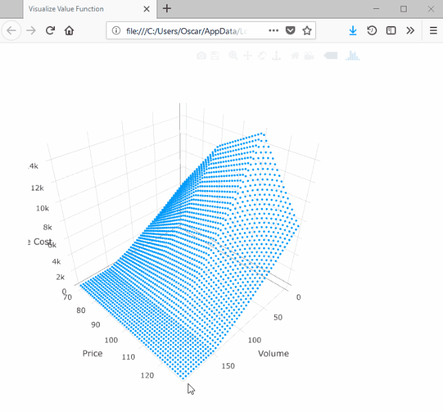

Tutorial Twelve: price interpolation
There are many applications in which we want to model a price process that follows some auto-regressive process. Common examples include stock prices on financial exchanges and spot-prices in energy markets. However, it is well known that these cannot be incorporated in to SDDP because they result in cost-to-go functions that are convex with respect to some state variables (e.g., the reservoir levels) and concave with respect to other state variables (e.g., the spot price in the current stage). To overcome this problem, the approach in the literature has been to discretize the price process in order to model it using a Markovian policy graph like those discussed in Tutorial Four: Markovian policy graphs.
However, recent work offers a way to include stagewise-dependent objective uncertainty into the objective function of SDDP subproblems. Readers are directed to the following works for an introduction:
Downward, A., Dowson, O., and Baucke, R. (2017). Stochastic dual dynamic programming with stagewise dependent objective uncertainty. Optimization Online.
Dowson, O. PhD Thesis. University of Auckland, 2018. link
In Tutorial Five: risk, we formulated a risk-averse version of the hydrothermal scheduling problem. In this tutorial, we extend that model to the case where the fuel cost follows the log auto-regressive process:
log(fuel_cost[t]) = log(fuel_cost[t-1]) + log(noise)where noise is drawn from the sample space [0.9, 1.0, 1.1] with equal probability.
To model this in SDDP.jl, we can pass a DynamicPriceInterpolation object to the value_function keyword in SDDPModel. DynamicPriceInterpolation takes a number of arguments. First, we need to pass dynamics a function that takes two inputs – the value of the price state in the previous stage and an instance of the noise – and returns value of the price state for the current stage. For example, the dynamics of our price process are:
function fuel_cost_dynamics(fuel_cost, noise)
return noise * fuel_cost
endWe also need to specify the distribution of the noise term. We do this by passing a DiscreteDistribution to the noise keyword. DiscreteDistribution takes two arguments: the first is a vector of realizations, and the second is a corresponding vector of probabilities. For our example, we create the noise distribution as:
noise = DiscreteDistribution( [0.9, 1.0, 1.1], [1/3, 1/3, 1/3] )It is the realizations of the noise 0.9, 1.0, or 1.1 that are passed as noise to fuel_cost_dynamics.
We also need to pass the value of the price state in the root node to initial_price, as well as the minimum (to min_price) and maximum (to max_price) possible values of the price state variable.
Finally, we need to declare a lipschitz_constant. In each stage, the lipschitz_constant should be larger than the maximum possible absolute change in the cost-to-go function given a one-unit change in the value of the price state variable. For example, in our model, the worst-case scenario is if we are forced to use thermal generation exclusively. In that case, we need to supply 450 MWh of energy. Therefore, a one-unit change in the value of the price-state can, at most, lead to a $450 change in the cost-to-go function. However, to be on the safe side, we choose a larger value of 1000.0.
Putting all of this together, we can initialize the SDDPModel using dynamic interpolation as:
m = SDDPModel(
# ... arguments omitted ...
value_function = DynamicPriceInterpolation(
dynamics = fuel_cost_dynamics,
noise = DiscreteDistribution([0.9, 1.0, 1.1], [1/3, 1/3, 1/3]),
initial_price = 100.0,
min_price = 50.0,
max_price = 150.0,
lipschitz_constant = 1000.0
)
do sp, t
# ... subproblem definition ...
endIn the subproblem definition, we use a different version of the @stageobjective function. This version takes a function that maps the price in the current stage to an expression for the stage objective. For our example, the stage-objective is:
@stageobjective(sp, (fuel_cost) -> fuel_cost * thermal_generation )The next question is how to extend this notation to models in which the price process depends upon the stage or Markov state. This can be implemented in SDDP.jl following a similar approach to that we discussed in Stage-dependent risk measures. Instead of passing an instance of DynamicPriceInterpolation, we pass a function that takes two arguments – the stage t and Markov state i – and returns an instance of DynamicPriceInterpolation. For our example, if the price is deterministic in the first stage:
function build_price_interpolation(t::Int, i::Int)
noise = if t == 1
DiscreteDistribution([1.0], [1.0])
else
DiscreteDistribution([0.9, 1.0, 1.1], [1/3, 1/3, 1/3])
end
DynamicPriceInterpolation(
dynamics = fuel_cost_dynamics,
initial_price = 100.0,
min_price = 50.0,
max_price = 150.0,
noise = noise,
lipschitz_constant = 1000.0
)
endPutting all this together, our model is:
m = SDDPModel(
sense = :Min,
stages = 3,
solver = ClpSolver(),
objective_bound = 0.0,
markov_transition = Array{Float64, 2}[
[ 1.0 ]',
[ 0.75 0.25 ],
[ 0.75 0.25 ; 0.25 0.75 ]
],
risk_measure = EAVaR(lambda=0.5, beta=0.1),
value_function = build_price_interpolation
) do sp, t, i
@state(sp, 0 <= outgoing_volume <= 200, incoming_volume == 200)
@variables(sp, begin
thermal_generation >= 0
hydro_generation >= 0
hydro_spill >= 0
end)
@rhsnoise(sp, inflow = [0.0, 50.0, 100.0],
outgoing_volume - (incoming_volume - hydro_generation - hydro_spill) == inflow
)
@constraints(sp, begin
thermal_generation + hydro_generation == 150
end)
@stageobjective(sp, (fuel_cost) -> fuel_cost * thermal_generation )
if i == 1 # wet climate state
setnoiseprobability!(sp, [1/6, 1/3, 0.5])
else # dry climate state
setnoiseprobability!(sp, [0.5, 1/3, 1/6])
end
endNow we can solve this model as usual.
status = solve(m; iteration_limit=100)When we simulate the policy, we can include the extra key :price, which records the value of the price state in each stage. For example:
simulation_result = simulate(m, 100,
[:outgoing_volume, :thermal_generation, :hydro_generation, :hydro_spill, :price]
)We can check that the price follows the auto-regressive process:
julia> simulation_result[1][:price]
100.0
90.0
99.0We can also plot the cost-to-go function using SDDP.plotvaluefunction like we discussed in Tutorial Seven: plotting:
SDDP.plotvaluefunction(m, 2, 2,
linspace(0, 200, 50), # the reservoir volume
linspace(70, 130, 50); # the price state
label1="Volume",
label2="Price"
)This will launch a browser window with the following: 
Note that the surface is convex with respect to the volume dimension and concave with respect to the price dimension.
That concludes our twelfth tutorial for SDDP.jl. In the next tutorial, Tutorial Thirteen: constraint noise, we discuss experimental support for noise in the constraint matrix.